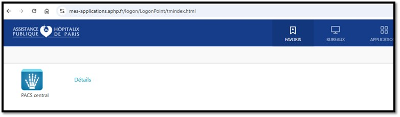

Le client lourd VuePACS V12.2 (PACS central) et le Bureau APHP / ORBIS tournent via Citrix Workspace.
L'installateur officiel a été téléchargé sur ton Mac dans /tmp/CitrixWorkspaceAppUniversal.pkg et ouvert automatiquement.
Termines les clics ("Continuer" → "Installer").
Ouvre https://mes-applications.aphp.fr/.
Connecte-toi avec ton identifiant AP-HP :
4106309 📋
(ou thomas-jean.lefevre@aphp.fr 📋)
et ton mot de passe AP-HP actuel, puis valide le code à 6 chiffres envoyé par authentification@aphp.fr.
⚠️ Note importante du tuto de Nacer : Si ton matricule affiche "Try again after some time or contact your help desk", c'est que l'accès externe à mes-applications.aphp.fr n'est pas encore activé sur ton profil AD : il faut en faire la demande sur SMAX (ou appeler le support CSU au *75 / assistance.informatique.aphp@aphp.fr).
Une fois sur le portail Citrix : dans l'onglet APPLICATIONS (ou FAVORIS), clique sur « PACS central » pour ouvrir VuePACS V12.2, et sur « ORBIS » (ou dans l'onglet BUREAUX → « Bureau APHP ») pour accéder à Orbis à distance.

*75 (interne) ou assistance.informatique.aphp@aphp.frlaila.sellami@aphp.fr (Tél : 01 58 41 21 97 / DECT 12197)07 78 07 73 45 / 01 48 04 22 94Dans PACS central, filtre par Site ID pour afficher uniquement les examens de ton hôpital (ex: CCH = 9 pour Cochin, PSL = 25 pour Pitié, HTD = 14 pour Hôtel-Dieu).